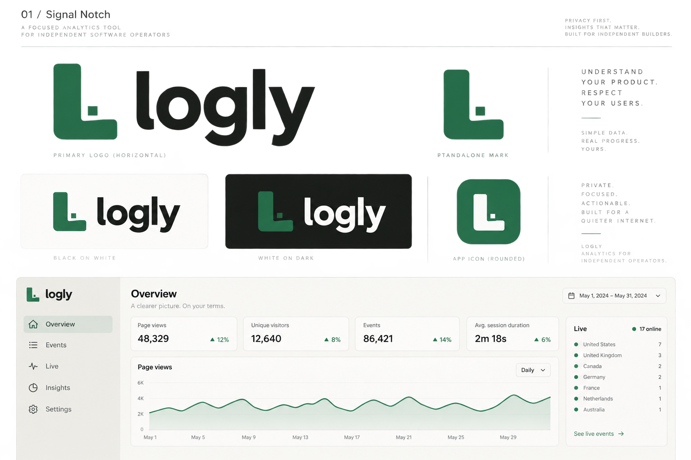
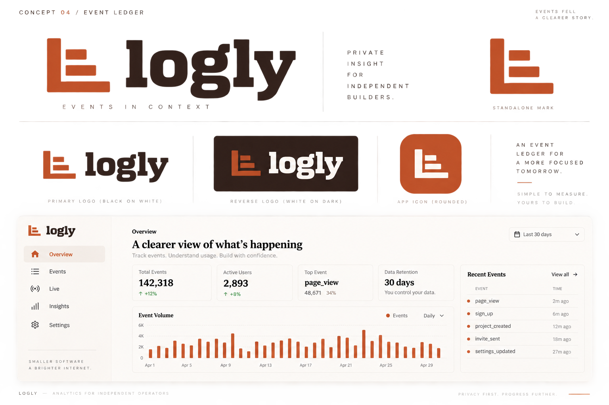
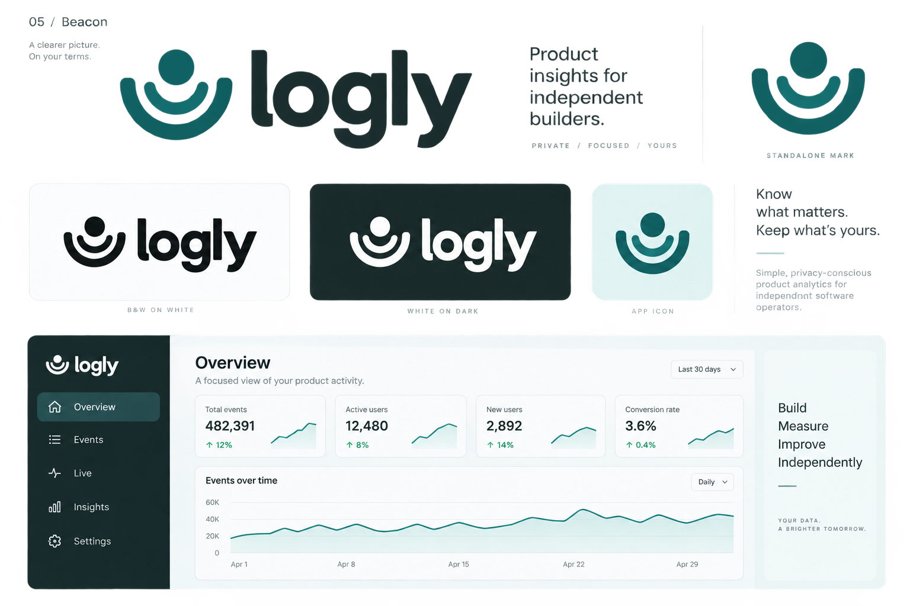

01 / Signal Notch
Best continuity with Logly. A compact green L and event dot; precise, grounded, easy to recognize.

02 / Event Thread
A connected event path. Blue, approachable and distinctly technical.

03 / Aperture
A segmented circle gathers signals into one view. Understated, editorial and more abstract.

04 / Event Ledger
A structured event register. Warm orange and a sturdy serif wordmark bring character.

05 / Beacon
A receiving signal. Rounded teal shapes give Logly a calm, approachable personality.
